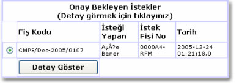
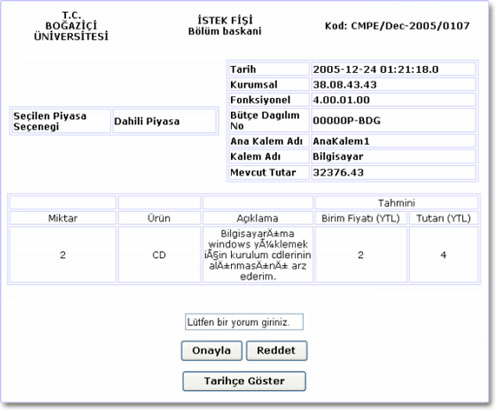

Bölümlerde doldurulan istek fiþleri bölüm sekreterinin onayýndan sonra bu sayfaya yönlendirilir. Bölüm Baþkaný sisteme girince karþýsýna onay bekleyen istek fiþleri doldurulma tarihlerine göre sýralanýr. Bölüm Baþkaný ayrýntýlarýný görmek istediði istek fiþini seçer ve "Detay göster" tuþuna basar ve yeni bir sayfaya yönlendirilir.

Yeni açýlan sayfada istek fiþinin özellikleri ve seçilen bütçenin "Fonksiyonel
Kurumsal Kodlarý" ve Mevcut Tutarlarý görüntülenmektedir.
Bölüm baþkanýnýn ayrýntýlarýný gördüðü istek fiþi ile ilgili aþaðýda belirtilen
yetkileri mevcuttur:
 Onayla
Onayla
Bölüm Baþkanýnýn onayladýðý istek fiþi ilgili bölümün baðlý olduðu fakültenin
dekanlýðýna yönlendirilir.
Reddet
Bölüm Baþkanýnýn reddettiði fiþler Bölüm sekreterine geri gönderilir.
Tarihçe göster
Bölüm Baþkaný istek fiþinin kimlerin onayýndan geçip kendisine geldiðini
inceleyip kararýný bu doðrultuda verebilir.
Bölüm baþkaný ekranýn solundaki menüde bulunan aþaðýdaki iþlemleride gerçekleþtirebilir.
ÝstekTakip
Sekreter durumunu öðrenmek istediði istek fiþinin kodunu girerek ayrýntýlarýný
çðrenebilir.
Yeni istek fiþi
Sekreter buradan kendisi için istek fiþi girebilir. Bu iþlemin ayrýntýlarý
için "Ýstek Fiþi" bölümüne bakýnýz.
Ana Menü
Ana menüye dönmek için kullanýlýr.
Þifre deðiþtir
Kullanýcý þifresi deðiþtirmek için kullanýlýr. Bu iþlemin ayrýntýlarý
için "Þifre deðiþtirme" bölümüne bakýnýz.
Sistemden Çýkýþ
Sistemden çýkmak için kullanýlýr.
